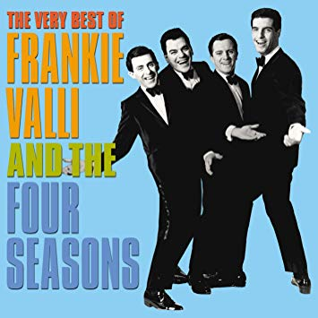

The Seasons

The four seasons of nature are Spring, Summer, Fall, and Winter. Although in Montana it would seem otherwise, this is true for most people. Each season has its own unique features. Feel free to use the navigation bar above to explore and learn more about each of the seasons of nature!
Those guys are The Four Seasons, one of the best selling American acts of all time. I thought I would put you guys on to some "new" music, it's really good stuff. Gotta love the 60s and 70s!